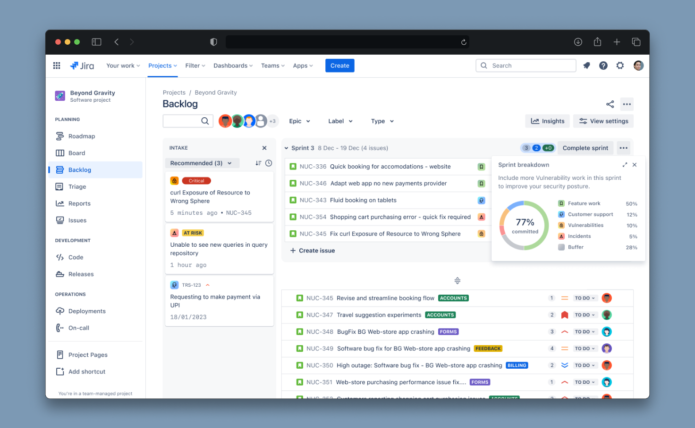
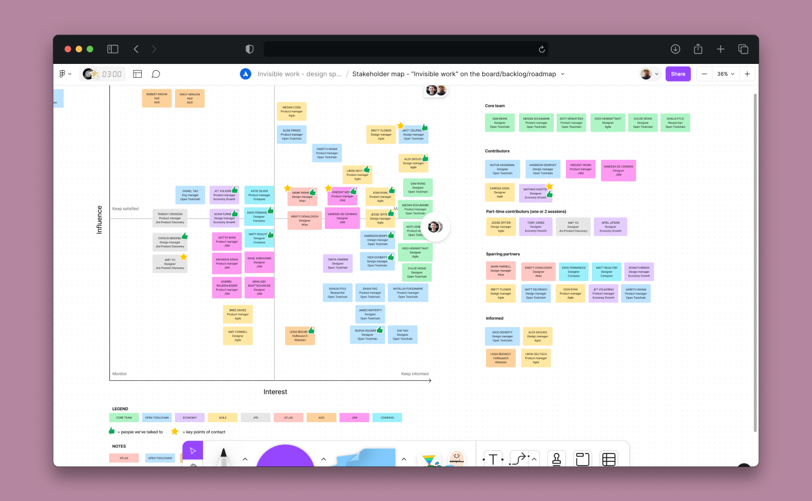
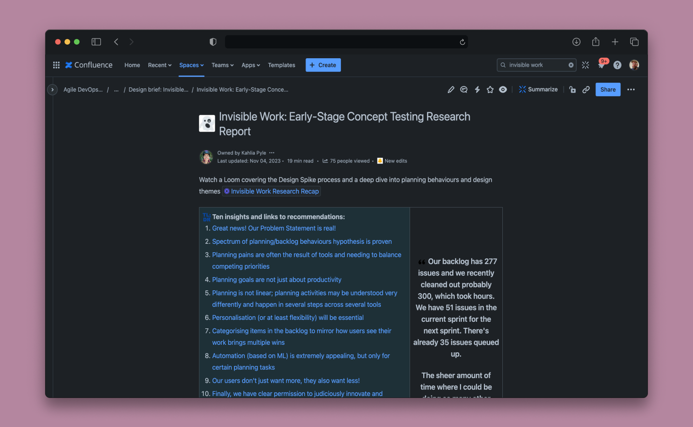

"Invisible work" experience strategy
As a member of a design leadership team, alongside senior managers, we wanted to escalate concerns about duplicate efforts and competing experiences across Atlassian products. In fact, we identified over 17 projects that looked eerily similar. Each project’s aim could be represented by a single, high level job statement:
Software teams can't easily identify, accept, describe, and prioritize work coming from outside sources when planning their efforts in Jira Software.
These projects had varied goals around cross-product engagement, upsell, and ecosystem integration. Basically, Jira Software gets a lot of eyeballs and our other products want to use this traffic to surface their product capabilities.
Trouble is: each product team had a different approach and the user experience was headed for bloat and clutter.
I led a design spike looking into this problem space. We wanted to test a hypothesis that a single approach could serve the needs of many different customer bases in the software development, IT service, and knowledge worker audiences, while also serving the business goals of many Atlassian products.
My primary concern was the customer’s journeys and primary tasks. I wanted to ensure that any cross-flow related experiences served a genuine user need and enhanced the product experience. I wanted to help Atlassian product teams take a strategic approach to reduce complexity and increase customer value, and decrease the time to realising that value in the market.
The process
I crafted a 4 week design spike that included a core team of collaborators - a researcher, a product manager, and two product designers - all working part time on the project. The schedule bounced between collaborative sessions in the morning (where my US participants could join) and deep, focus work blocks on alternate afternoons with the executing product designers (based in Australia).

Week 0: I took the first week to prepare, including creating stakeholder maps, contacting various managers to secure participation from subject matter experts and collaborators, and pouring through secondary research and existing project proposals.
Week 1: Problem framing and consolidating existing proposals. I facilitated sessions bringing in research and subject matter experts in the problem space. I conducted interviews with every team proposing an experience and provided findings and job stories from those sessions. In our deep focus time, we explored consolidating proposed designs and stress testing against the use cases uncovered in our research. Collaboratively, the core team developed a user-centred, overarching problem statement that encompassed the requirements of our product teams and target users.
Week 2: Divergent thinking and prototyping. I facilitated ideation sessions with product managers and designers from teams identified in our research. I used divergent, rapid ideation techniques and “disruption cards” (which spur behavioural science approaches to solutions) and collected over 400 ideas against various aspects of the problem statement. I led synthesis sessions with the core team to identify 10 concepts to discuss with customers. In our deep focus time, we mocked these up into lo-fidelity prototypes.
Week 3: Feedback and iteration. We held customer interviews throughout the week, discussing our key concepts and what they might mean to our customers. Meanwhile, we also checked back in with our stakeholders. In our deep focus time, the design group worked together to address incoming feedback, adjust designs, make decisions about direction, and uplift our prototypes to a higher fidelity.

Week 4: Polish, communicate, celebrate. As a core team, we discussed all our findings from customer interviews and stakeholder feedback, creating a list of beliefs and learnings. We presented these learnings to stakeholder groups and socialised them broadly across the business. Then, we took some time to celebrate our efforts.
The outcome
I delivered an experience strategy that considers the unique customers of various Atlassian products and complements the unique business strategies of these distinct pieces of software. This includes detailed conceptual mapping, journey mapping, personas, top tasks/job statements, and more.
After the spike, I worked with engineers to detail how to build related experiences to support ongoing engineering strategies. This included the architectural approach, the domain model, relevant API documentation, and example projects. This resource ensures that Atlassian teams build for longevity, since it’s easier to start from our example that come up with a novel approach.
I also worked with product managers to provide a resource for their discipline. This included an overview of relevant strategies from across the business, a directory of related work streams and stakeholders, and related analytics dashboards.
Beyond the strategy, our spike created 5 recommendations for moving the business forward in a unified experience, both front end and systems design. These included 2 distinct platform components that can be utilised by all Atlassian teams. These recommendations are roadmapped for development in 2024.
In the end, we consolidated the needs of 17+ projects into a single execution, planned to be undertaken by 2 or 3 different teams in the new year. That frees up some 45 engineers to move their products forward faster.
More importantly, we came out with a single design direction, validated by customers from across different target markets. This will reduce the complexity of our products and the cognitive burden of our users. This direction is user-centered and reframes cross-flow, upsell, and marketplace plays. Where individual teams wanted to focus on their particular key results, I was able to convince the business to rally around the users' jobs to be done and create flows that enhance their product experience, rather than compete for their attention.
I’ll be looking into the impact our solution has on each project teams’ goals, as identified in our research, with guardrail metrics at the ready. I expect these features to be announced at our annual product summit Team 24.
What I learned
This was a very ambiguous problem. It’s not one of those things you can spot very easily unless you keep your ears perked up and keep the customer experience front and center. It was also a project that was entirely design led. Design leadership (which I’m a part of) identified a problem and set out to create a recommendation autonomously. That can backfire, if you don’t take the time to manage your stakeholders wisely, and communicate effectively. Setting out a stakeholder map and taking the time to personally understand the needs of project teams made quick work of securing agreement, alignment, and eventually commitment to build the design team’s recommended solution.
This project really drove home how difficult being a lead in a large organisation is. You need to create a welcoming, productive environment for participants, while working tirelessly in the background to inform senior stakeholders. You have to move quickly, but not so fast that you don’t learn from customers, or so fast that you don’t give time to explore and uncover innovative ideas.
This project brought me right back to the fundamentals of design thinking. It was fast paced, but I really enjoyed it. We stayed in lo-fidelity - sticky and sharpies, boxes and arrows - for as long as humanly possible. We tested wireframes with customers, probing deeply into their needs and expectations for distinct but related tasks across multiple industries. Because of that we moved really fast. That builds confidence, which drives project momentum, and gets vision work onto roadmaps.